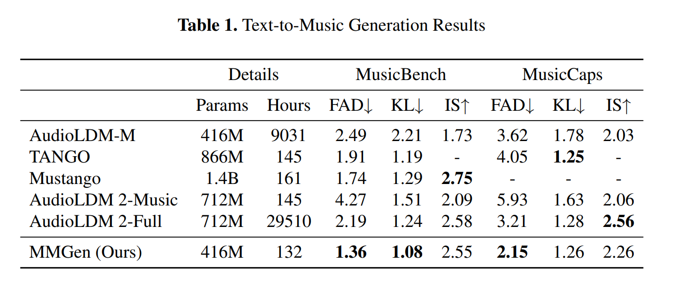
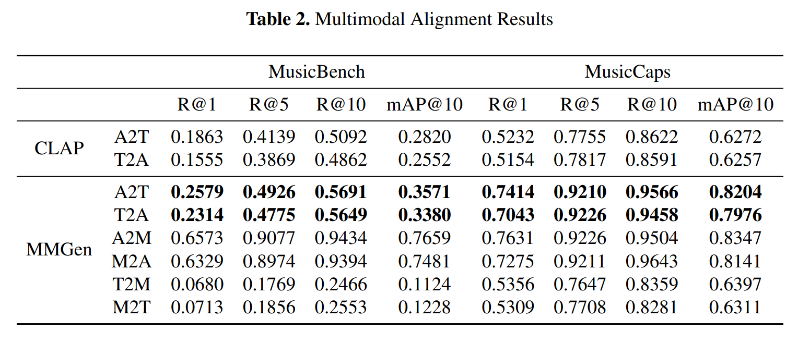

MMGen: Melody Is All You Need For Music Generation
We present the Melody Guided Music Generation (MMGen) model, the first novel approach using melody to guide the music generation that, despite a pretty simple method and extremely limited resources, achieves excellent performance.
Anyone can use this model to generate personalized background music for their short videos on platforms like TikTok, YouTube Shorts, and Meta Reels. Additionally, it is very cost-effective to fine-tune the model with your own private music dataset.
Main Results


Here, we present the two main results of our experiments (i.e., text-to-music generation and multi-modality alignment), which demonstrate the effectiveness of MMGen using objective metrics.
Comparison of Generated Music Examples
Examples of prompts randomly generated by ChatGPT-4o
| Prompt | MMGen | AudioLDM2-music | Mustango |
|---|---|---|---|
| Reggae song with a laid-back groove and uplifting, positive lyrics. | |||
| Dark techno track with deep basslines and hypnotic, repetitive beats. | |||
| Lo-fi hip-hop beat with mellow piano chords and a relaxed, jazzy vibe. | |||
| Violin performance with a sentimental and nostalgic atmosphere. | |||
| Hip-hop beat with deep bass and sharp electronic samples. | |||
| Orchestral composition with sweeping strings and dramatic crescendos. | |||
| Funky groove with slap bass, tight drums, and soulful brass sections. | |||
| Generate a high quality, smooth, and slow paced piece of classical music. |
Examples of prompts in MusicCaps
| Prompt | MMGen | AudioLDM2-music | Mustango |
|---|---|---|---|
| This is a funk/disco music piece. There is a male vocalist singing melodically in the lead. The melody is being played by the keyboard with the backing of the electric guitar and the bass guitar. The rhythm is being played by the acoustic drums. The atmosphere is groovy. This piece could be played at a retro-themed party at a dance club. | |||
| This song contains a plucked string instrument playing a melody in the higher register along with an acoustic guitar strumming chords on the backbeat and an upright bass playing a simple melody along to the lead melody. This song may be playing in a video-presentation. | |||
| This composition contains an upright bass playing softly along to a harp and strings playing a melody while a male deep voice is softly singing a melody sounding like telling a story. The song sounds like it was made for Christmas. This song may be playing at home having dinner with the whole family. | |||
| This audio contains someone playing a piece on cello ranging from the low register up into the higher register. This song may be playing during a live performance. | |||
| The song is an instrumental. The song is slow tempo with gentle drum brushes, percussion, bass guitar solo, and piano accompaniment gently. The song is groovy and emotional. The song is possibly a Christian worship song or a smooth jazz song. The audio quality is average. | |||
| The Electro Pop song features a flat female vocal, occasionally supported by wide background female doubling vocals, singing over quiet drums, groovy and boomy bass, arpeggiated synth melody and some sound effects of the airplane and the explosion. In the second part, the drums cut through the mix more, therefore they are more audible, while the new elements appear, including shimmering bells and simple hi hats. Sounds like a low quality recording, especially because of that first part of the loop. | |||
| The high-quality, smooth, and clear quality recording features a live performance of a big band that consists of shimmering hi hats, steel pan melody, punchy snare, soft kick hits, bright brass melody, groovy double bass melody and cowbell percussion. The recording is a bit noisy and it sounds happy and fun. |